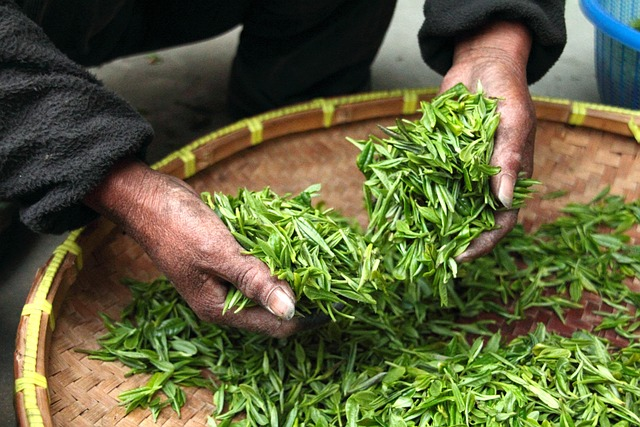

The Founding Story
The Tea Haven was founded not in a boardroom, but across countless cups of tea. We shared a frustration: while exquisite, single-estate Chinese teas existed, they were often inaccessible, shrouded in complex lore, or simply diluted in quality. Our passion became a mission: to create a curated sanctuary—a 'Haven'—where the rich, authentic history and diverse flavors of China's finest teas could be explored and enjoyed by everyone. Our slogan, "Where Every Cup Tells a Story," is our promise to you that behind every leaf is a centuries-old tradition and the dedication of master farmers. We cut through the noise to bring the pure, unadulterated essence of the tea garden directly to your home
The Meticulous Harvest: Honoring Tradition
The difference between fine tea and common tea begins in the garden. Our teas are hand-plucked by skilled artisans, often following techniques passed down through generations. This is not just tradition; it’s quality control. A machine cannot discern the difference between a delicate white tea bud (like Bai Hao Yin Zhen) and an inferior, tougher leaf. Our farmers only choose the prized terminal bud and the two youngest leaves, ensuring maximum flavor and smoothness.
